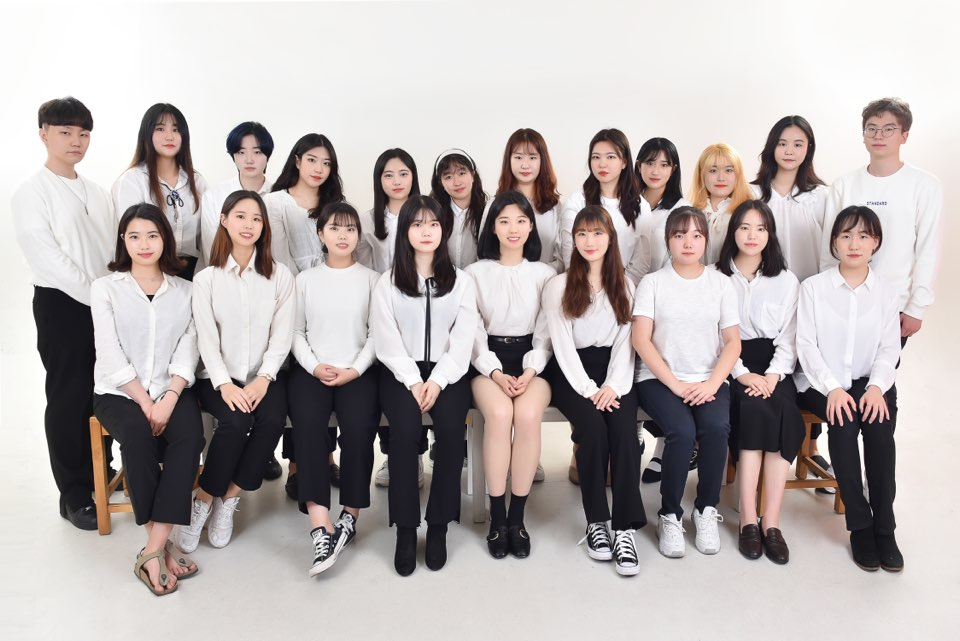
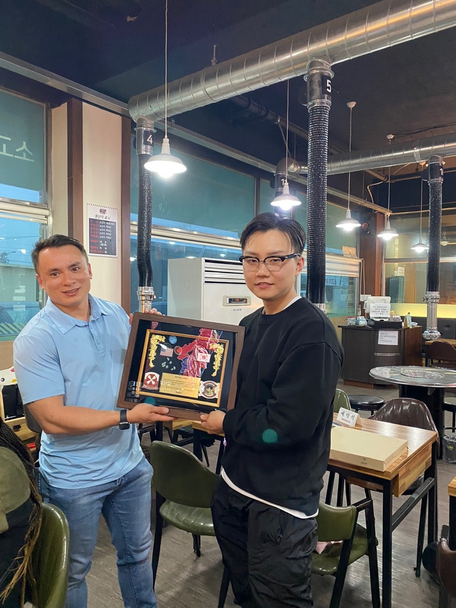
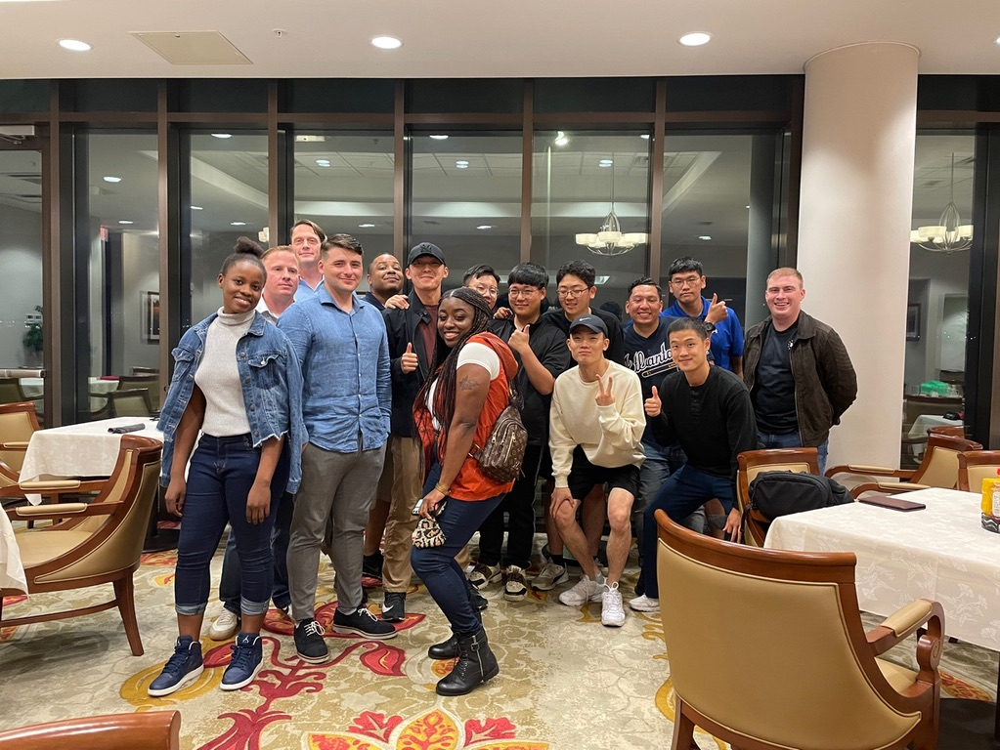
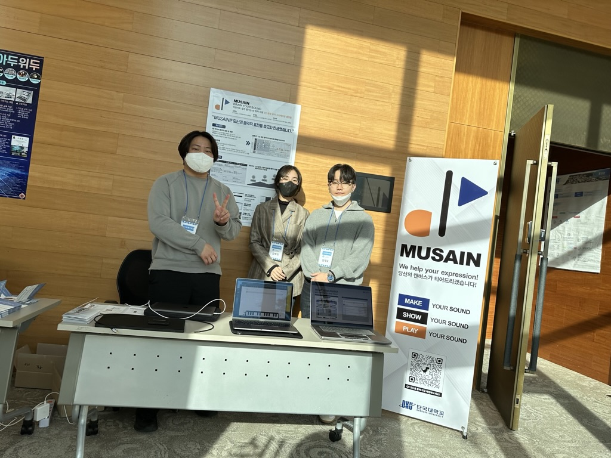
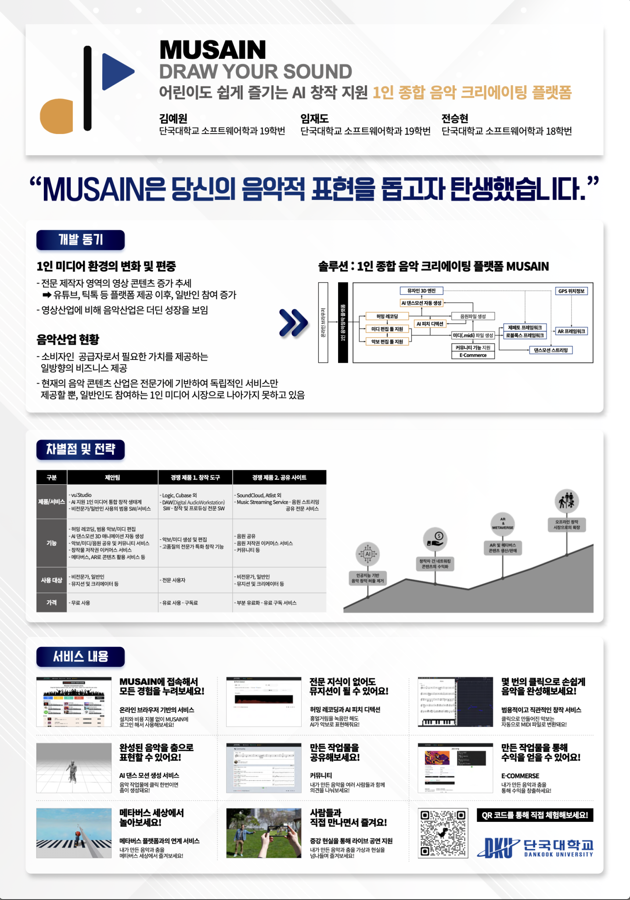

My Careere History
2019
In Dankook University
2019-1st semester : Top grade in College of SW Convergence
2019-2nd semester : Top grade in Software Science Major
2019-July ~ 2020-November : a senior reporter of the Dankook Herald, which is an English newspaper media of DKU. 
Photo of the Dankook Herald
2020
In Dankook University
2020-May ~ 2020-December : won the SW start-up contest held by College of SW Convergence
- Team name : PlayMate
2021
In the Army : KATUSA (Korea Augmentation To U.S. Army)
2021-January ~ 2022-July : ETS on SGT rank from US Army Pacific 8th Army HHBN OPS CO.

Photo of the appreciation frame
Photo of buddies

DA Photo of the Senior KATUSA
Middle of Service : Senior KATUSA, platoon SGT for KATUSA2022-May : Received ARCOM (Army Commendation Medal)
2022-July : Received COA (Certificate of Appreciation)
2022
In Dankook University
2022-April ~ 2022-December : won the SW start-up contest held by College of SW Convergence
– Team name : MUSAIN
2022-July ~ 2022-October : an undergraduate researcher of the CSOS (Computer Security and Operation Security) Lab
⌘ thesis : A Study on Android Emulator Detection Using Build Properties
- Registered on The 8th ICNGC(International Conference on Next Generation Computing 2022)
2022-October : won the start-up idea contest held by Dankook University and Konkuk University
– Team name : MUSAIN
2022-November : won the idea festival held by Hankuk University of Foreign Studies
2022-December : the grand prize of Win-Win Innovation Campus Day held by Dankook University and Yongin City
– Team name : MUSAIN

Photo of Win-Win Innovation Campus Day held by Dankook University and Yongin City
Photo of MUSAIN’s poster
Extra Activity
2022-April ~ 2022-December : Contents Impact Follow-up support by Korea Creative Content Agency of Ministry of Culture, Sports and Tourism
– Team name : MUSAIN